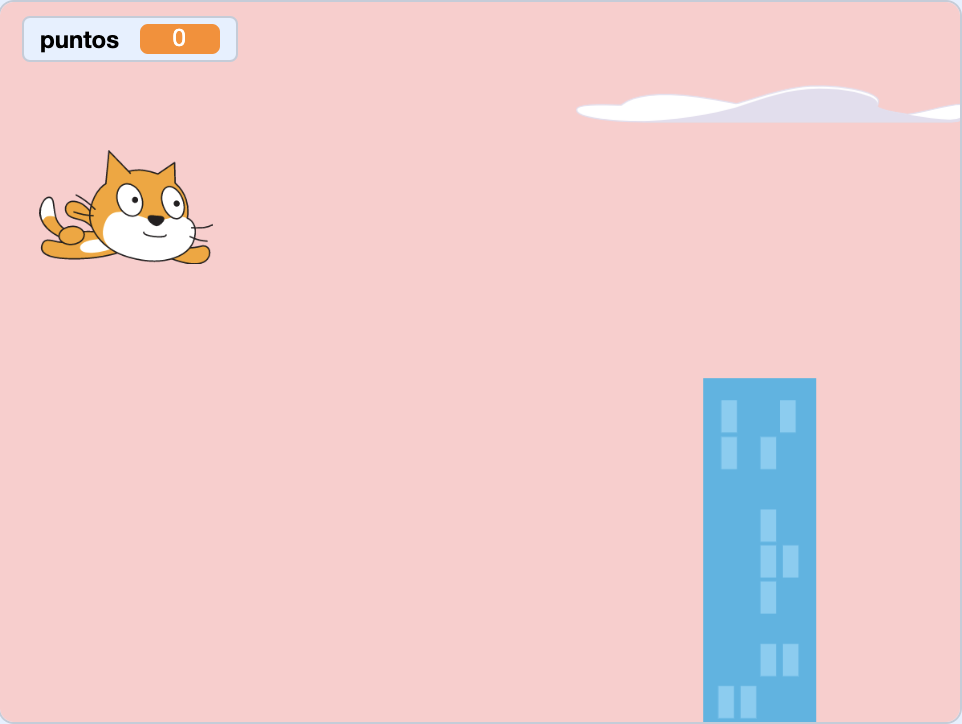
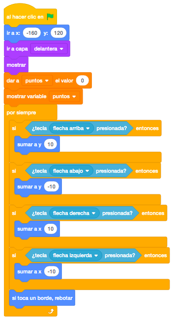
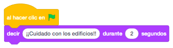
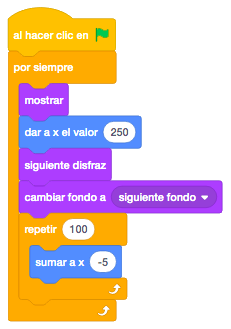
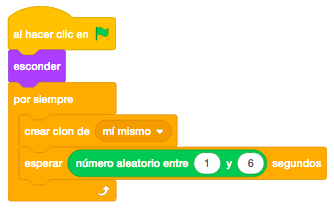
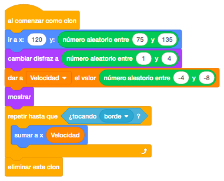
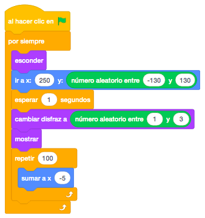
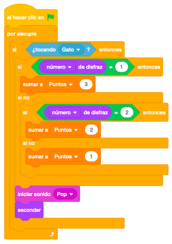
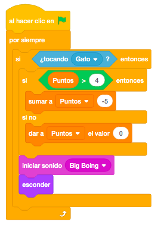
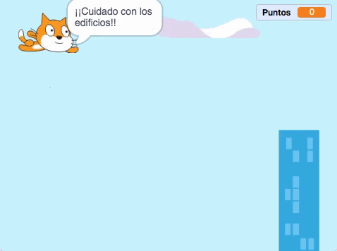

Necesitamos un objeto que será el que se moverá con los cursores arriba, abajo, izquierda y derecha por toda
la pantalla. En nuestro caso será el gato que parece que está volando. También necesitaremos edificios y
nubes que se moverán de derecha a izquierda continuamente. Estos objetos los cogeremos de la biblioteca de
Scratch
Irán apareciendo también unos objetos tipo monedas que iremos cogiendo y acumulando puntos. Nosotros
pondremos unas bolas de tres colores, oro, plata y bronce.
Usaremos dos escenarios distintos que seleccionaremos de la biblioteca de Scratch. También se pueden dibujar.
Para descargar los objetos necesarios para el juego, lo haremos desde este link. Es un archivo comprimido con 1 objeto. Lo descargaremos y lo descomprimimos en el directorio del alumno.
El juego consiste en que nuestro personaje (el gato volador) se moverá con los cursores e ira recogiendo las
monedas (bolas) que se va encontrando. Dependiendo del color de la moneda, recibirá una serie de puntos, 1
si es de bronce, 2 si es de plata y 3 si es de oro. Pero cuidado con los edificios. Si nos golpeamos con
alguno de ellos, nos quitarán 5 puntos.
En este juego, para mover al gato por la pantalla, en lugar de moverlo mediante los bloques "Apuntar En
Dirección" y "Mover Pasos", lo haremos mediante las coordenadas "X" e "Y". Tenemos que tener en cuenta las
coordenadas de nuestra pantalla.

Empezaremos por poner al gato volador. Lo posicionaremos a la parte superior izquierda de la pantalla y lo
traeremos a la capa delantera. Crearemos una variable "Puntos" que inicializaremos a "0" y mostraremos en la
esquina superior derecha.
Ahora moveremos el gato por la pantalla. Lo haremos mediante las coordenadas "X" e "Y". quedando de la
siguiente forma:
- Si pulsamos la tecla "Arriba", sumaremos 10 a y.
- Si pulsamos la tecla "Abajo", sumaremos -10 a y.
- Si pulsamos la tecla "Derecha", sumaremos 10 a x.
- Si pulsamos la tecla "Izquierda", sumaremos -10 a x.
Añadiremos que si toca un borde, rebote para que se quede dentro de los límites de la pantalla.

Mostraremos un mensaje de "¡Cuidado Con Los Edificios!" para avisar al jugador. Lo pondremos a parte para que no interfiera con el movimiento.

Para dar sensación de movimiento pondremos edificios y nubes que se moverán de derecha a izquierda.
Ahora que el gato se nos mueve por toda la pantalla. pondremos los edificios. Irán saliendo por la parte
derecha, irán cambiando de disfraz y se moverán a la izquierda hasta el final de la pantalla.

Pondremos ahora las nubes, que haremos como clones. Los clones son objetos creados a partir de otro con
exactamente las mismas características en el momento de ser creados.
Los iremos creando cada una cantidad de tiempo aleatoria. El objeto original lo esconderemos.

Para programar los clones que hemos creado, lo haremos mediante el bloque de control "Al Comenzar Como Clon".
Como hemos dicho, mostraremos el clon y lo colocaremos a la derecha de la pantalla y en una posición
aleatoria en la coordenada "Y" para que unas aparezcan más altas que otras.
También la velocidad con la que se mueven las nubes será aleatoria. Para ello, crearemos una variable
"Velocidad" que inicializaremos con un valor aleatorio y moveremos las nubes hacia la izquierda a la
velocidad asignada. Para moverlas, también utilizaremos la coordenada "X". Al final, en lugar de esconder el
clon, lo eliminaremos.

Vamos a programar las monedas. En nuestro caso serán unas bolas que simularán las monedas de oro, plata y
bronce.
Lo primero que haremos será un bucle para ir mostrando las monedas en la parte derecha y en posiciones
aleatorias de "Y". Cambiaremos el disfraz también aleatoriamente, la mostraremos y la moveremos hasta el
otro extremo sumando a la coordenada "X".

Ahora programaremos que si el gato coge las monedas suma a su puntuación 1, 2 o 3 puntos, dependiendo del
color
Desde la moneda, programaremos que si toca el gato, evaluaremos el disfraz que tiene para ver el color y
sumaremos los puntos correspondientes. Además haremos un sonido.

Vamos a añadir que si nos chocamos con un edificio, le quitaremos 5 puntos.
Al coger las monedas, le quitaremos 5 puntos pero si no tiene puntos suficientes, lo dejaremos a cero, nunca en negativo.
Para ello, en el edificio programaremos que si tocamos al gato, dependiendo de los puntos que tengamos nos quitará 5 puntos o menos.

Se podrían hacer clones para que tuviésemos varias monedas a la vez en la pantalla. También podríamos en lugar de quitar puntos cuando chocamos con los edificios, quitar vidas y hacer una pantalla final de "Game Over"
Y el juego quedaría así.

Para ver el juego terminado pulsa
aquí.
Para descargarte el juego terminado pulsa
aquí.